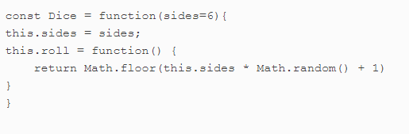

Week 4- Forms method, and OOP implementation using jacascript, and Moderm JavaScript summarized,
Forms
Forms are the most common method of interacting with a web page, and most of us use forms
every day to log into our favorite sites as we use the internet. During the
course of this topic we will look into how JavaScript program enables forms
interaction. "it is important we know forms are made up of a element
that hold form controls such as input fileds, buttons and select menus.Please view below the image
showing sample of a form that has one input filed and a button to submit search query."
The above sample image shows the form has a name attribute of "search" and holds two
controls where a user will be able to enter search phrase and a button to submit the form.
Accessing Form Element
The document object model(DOM) comes in handy here as it had a method called document.forms that will help return an HTML collections of all forms element in the order they appear. To make this possible we have to use index notation to return form object, like the sample image below.
In the same vein the form object also has a method(elements) that an HTML collections of all the elements contained in the form. Please for better understanding view the sample image below.
Form Controls
We have some form control that can help our web pages to be more interactive, the image below showcase the different type of form controls and following, the other image showcase a form to demonstrate these HTML form Controls.
Below is a form that can be use to book reservation in a temple inn.
Book Your Reservation
The Object Oriented Programming
It is called OOP for short, it involves seperating code into objects that have properties and methods. Object oriented programming can be used to model representations of objects in the real world.We have three main concepts in OOP: encapsulation, polymorphism and inheritance.
Encapsulation
It help to show the essential functionalities to the end user and help to hide the inner workings inside the object. We could simply say it involves keeping all the programming logic inside an object and making methods available to implement the functionality, without the outside world needing to know how it’s done.
Polymorphism
This concept in OOP try to help us understand that various objects can share the same method, but also have the ability to override shared methods with a more specific implementation.
Inheritance
This concept in OOP demonstrate taking features of one object then adding some new features. In simple terms, this means we can take an object that already exists and inherit all its properties and methods. We can then improve on its functionality by adding new properties and methods.Lets see alternative way to create objects.
Constructor Function
This is a function that describe the properties and methods of an object. The image below shows an example of a constructor functions.
The Constructor Property
Constructor property returns the constructor function that created it as all objects have the constructor property that makes this possible. The following image example will help buttress the constructor property.
Modern JavaScript Development
Modern JavaScript development gives us the enablement to look at the various frameworks and tools that can used to enhance the quality of our code. Thus, making it more organized and easier to maintain, enabling code reuse and making ready our applications for production.
These modern javaScript development makes it readily available to ensure we know of the following topic, as shown in the image below.
MVC Frameworks
MVC is an architectural pattern that seperates an application into three independent component that ensure basic interaction with each other. MVC is industry standard web development framework to create scalable and extensible projects, and it is frequently used. The image below shows a component of MVC:
Models This implements the functionality fo creating, reading, updating and deleting(CRUD), this task is known as CRUD and does a specific operation in the associated logic and behavior. For example a customer object will retrieve the customer information from database, manipulate it and update it data back to the database.
Views This provides a visual representation of the model, thus enabling information access, and makes available for the user the oppurtunity to interact with the application. For example the user view will include all the UI components such as text boxes, dropdowns, etc.
Controllers This acts an interface between model and view to process all incoming request, as it enables communication between the model and view components. For Example For example, the Customer controller will handle all the interactions and inputs from the Customer View and update the database using the Customer Model. The same controller will be used to view the Customer data.
The image below shows an example of how the MVC architecture can be implemented using JavaScript.

This is a basic HTML containing a form with a single input field for entering a list item. We need to create the JavaScript file, and save same in the folder.The images below shows the javScript(code), that will be added to .js file: these images shows the controller object responsible for adding an event listerner to the form to notice when the user adds information. Follwoing image shows the view object with a render () method. The last image shows the watch () method that will keep an eye on the form and checks when it is submitted.
Package Managers
A package is just a directory with one or more files of code, as well as a package.json file that contains information about the code in the package. A package manager makes it easy to install, upgrade and remove any packages that are used in a project. They also allow you to manage different versions of packages. package managers can also help with dependency management. It is also possible to install packages globally so they’re available system-wide from any directory on your machine, this might sound like a good idea at first, nut it is not advisable we use it, except in some cases where we feel it makes sense to intall globally, usually, when the package is to be used on a system-wide basis.